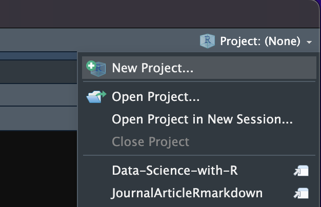
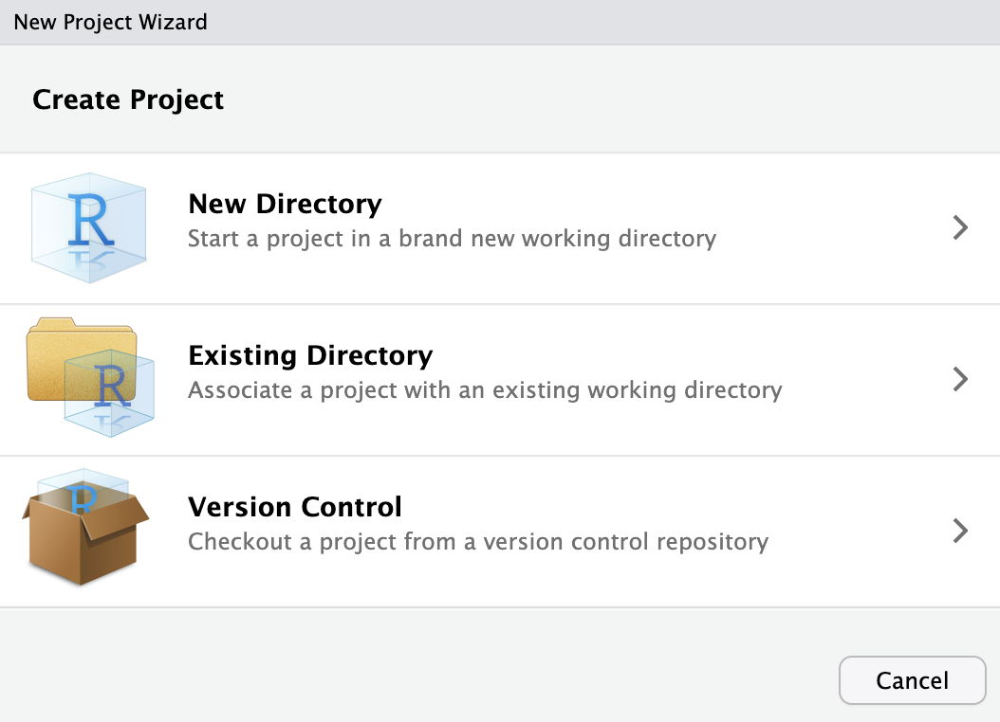
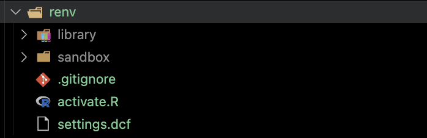
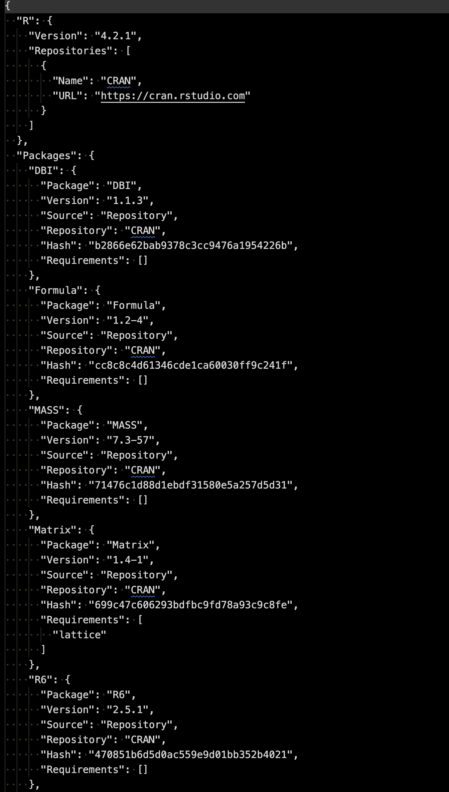

3 Project Organization
3.1 RStudio Project
While it is not required, it is highly recommended that the root project directory is designated as an RStudio Project. Here, minimal guidance on RStudio Project is provided. See an introduction to RStudio Project by Posit for more information.
3.1.1 Why RStudio Project
There are number of benefits to using an RStudio Project. Here are some of them.
Isolated Working Directory: Each RStudio project operates in its own directory, which means you can keep datasets, scripts, and other files organized. When you open a project, RStudio automatically sets the working directory to the project’s directory.
Integration with
renv: Projects can be integrated with therenvpackage to manage project-specific libraries. This ensures reproducibility by having consistent package versions (see Section 3.3 for more details).Independent R Sessions: Each project can have its own separate R session, reducing the risk of variables or functions from one project interfering with another. Further, since each project maintains its own environment, it’s easier to keep track of variables, loaded packages, and function definitions.
Easy Navigation of the File System: The Files pane in RStudio will automatically be rooted at the project directory, making it easier to navigate and manage project files.
3.1.2 Starting an RStudio project
To create (designate as) an RStudio project, first click on the Project icon at the right upper corner of RStudio IDE. You will then see menus like below:
You can then select the New Project… option, which will then give you the following popup window.

New Directory: As its name suggests, you will create a new directory and it will be designated as an RStudio project automatically.
Existing Directory: If you already have a directory for your project, then you can use option to designate it as an RStudio project.
Version Control: You can clone a repository as a directory to your local machine and designate it as an RStudio project.
After completing the process, you will find project_name.Rproj in the root directory. This file is a simple text document that stores important metadata and preferences specific to the project. You can determine if a directory is an RStudio project by checking for the presence of this file.
3.2 Folder structure
Having a well-organized project folder system is essential, not just for reproducibility, but also for your productivity. Below is a suggested structure:
/Users/tmieno2/Dropbox/TeachingUNL/JournalArticleRmarkdown/RJA_template
├── code
│ ├── main
│ └── sandbox
├── data
│ ├── processed
│ └── raw
├── docs
├── renv
│ ├── library
│ │ ├── R-4.2
│ │ └── R-4.3
│ ├── sandbox
│ │ ├── R-4.2
│ │ └── R-4.3
│ └── staging
├── results
│ ├── figures
│ └── tables
└── writingHere’s a brief overview of the contents for each folder:
- code:
- main: Contains all the R (or other program) codes necessary for reproducing the project results.
- sandbox: Includes any R codes used to test or explore.
- data
- processed: Stores datasets that are derivatives of the raw datasets. These are generated by codes stored in the code folder.
- raw: Houses all the raw datasets, which should never be altered.
- docs: Contains any relevant documents (journal articles, data documentation, etc)
- renv (optional): This will be discussed later in Section 3.3.
- results: Contains all generated results, including tables, figures, regression outcomes, etc.
- writing: The manuscript and related files, such as bibliography, citation style language file, and others.
Organizing project files in this way simplifies navigation through the directory, making it easier to locate specific files for both you and others.
3.3 renv: Project-Specific Package Management in R (Recommended, but optional)
The R ecosystem is continually evolving, with packages frequently getting updated, enhanced, or even deprecated. While this dynamism is a strength, it can also lead to challenges when revisiting or sharing older R projects. The renv package can provide a robust solution to this issue.
3.3.1 Why use renv?
- Consistent Project Environment:
renvenables you to encapsulate the state of your R packages within a specific project. This encapsulation ensures that, even as the broader R ecosystem evolves, your project’s environment remains consistent.
For instance, imagine you’ve conducted an analysis, submitted your findings, and, four months later, you’re revisiting the project due to reviewer feedback. During that hiatus, you might have updated various R packages. These updates, even minor ones, could introduce changes that break your analysis or alter results. With renv, such concerns evaporate; your project-specific library safeguards against discrepancies caused by package updates.
- Reproducibility: The
renvpackage ensures collaborators or individuals trying to reproduce your work can emulate the exact R environment you used, right down to the versions of the packages. This precision significantly eases the reproducibility process.
3.3.2 Set up renv
library("renv")For a new or existing project, initialize renv by:
renv::init()This will create a directory named renv.

Inside the directory, you can see a directory called library. This is where the packages for the project is stored. These packages are independent of the packages that are available universally for R. The information about the packages are stored in the file called renv.lock along with the version of R as you can see below.

This is a snapshot of the current state of the library.
Important
Packages outside of the project cannot be used. For example, suppose you have not installed tidyverse package to the project library folder, but you have for generic use of R. You will not be able to use tidyverse in the project.
You can install R packages as you normally would using install.packages(). These will be installed into the project’s isolated library, ensuring no interference with other projects.
After adding, updating, or removing packages, snapshot the new state:
renv::snapshot()This updates the renv.lock file to represent the current state of your library.
3.3.4 Deactivating and Removing renv from a Project:
If you decide to remove renv from a project:
- Ensure your project is activated with
renv. - Run:
renv::deactivate()
renv::clean()This will remove the renv settings and library. You can also manually delete the renv.lock file and renv folder if they are still present.
3.3.5 Other features
renv::status(): check the difference between the recorded snapshot and your current environment.renv::diagnostics(): can be a helpful command for troubleshooting, if you run into problems or unexpected behaviors.renv::update(): update packages.